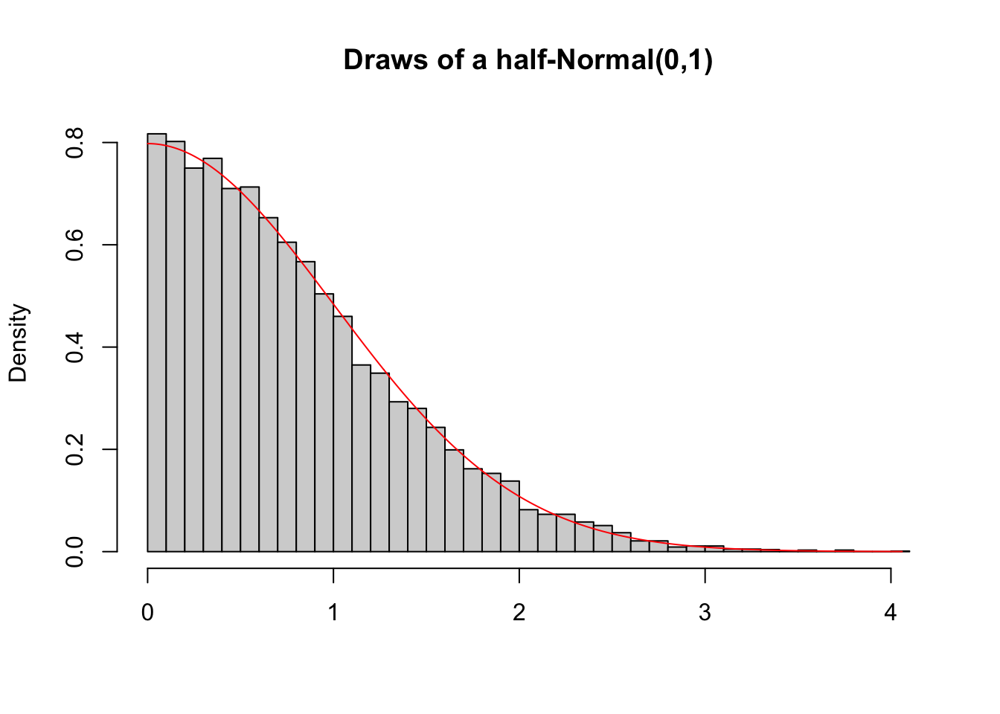
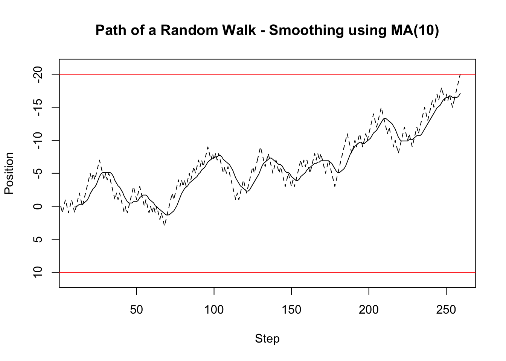
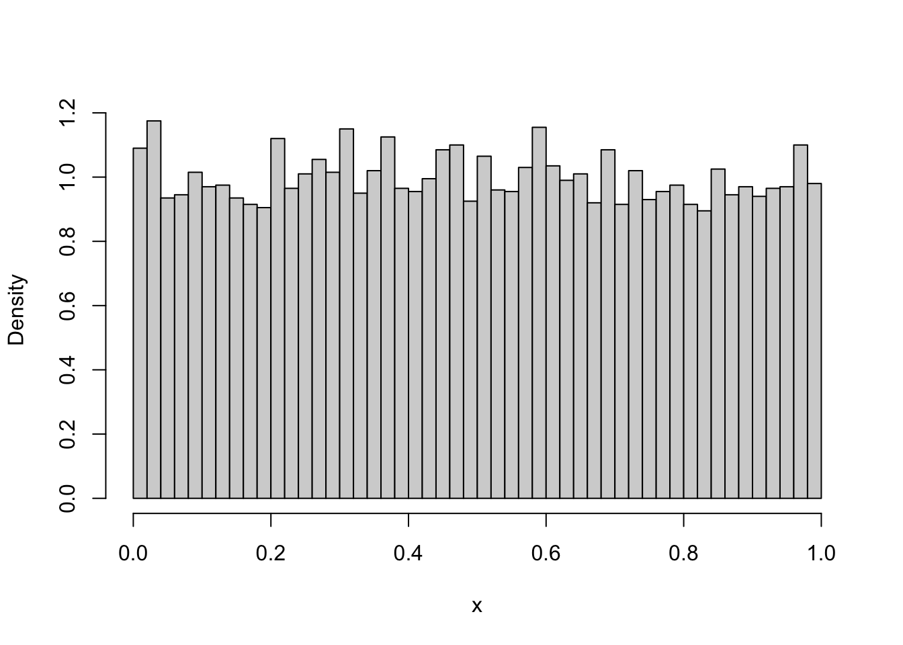
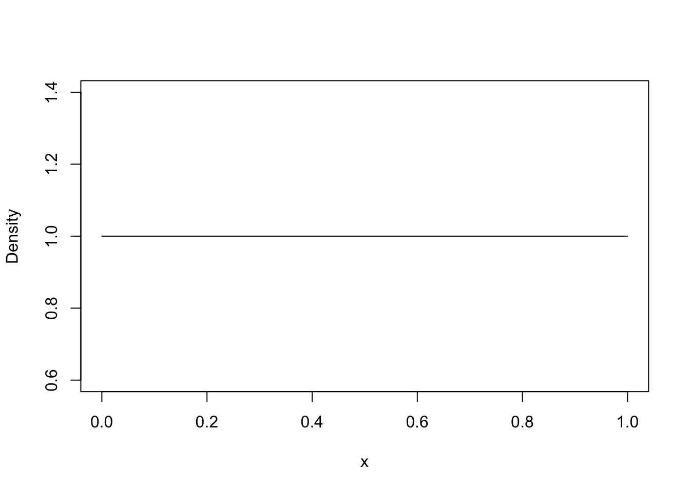
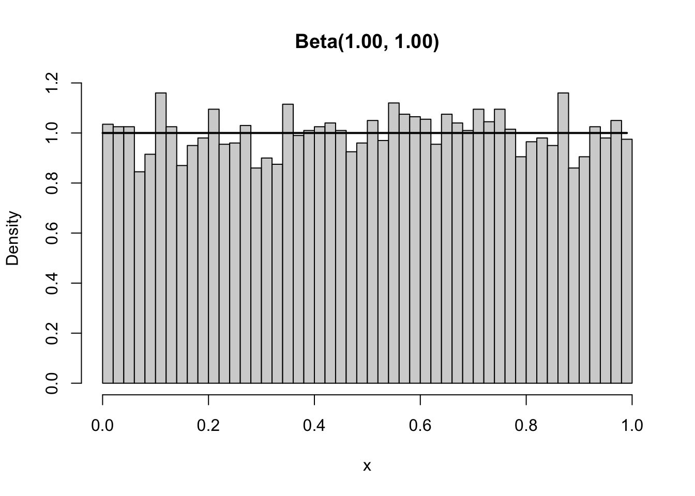
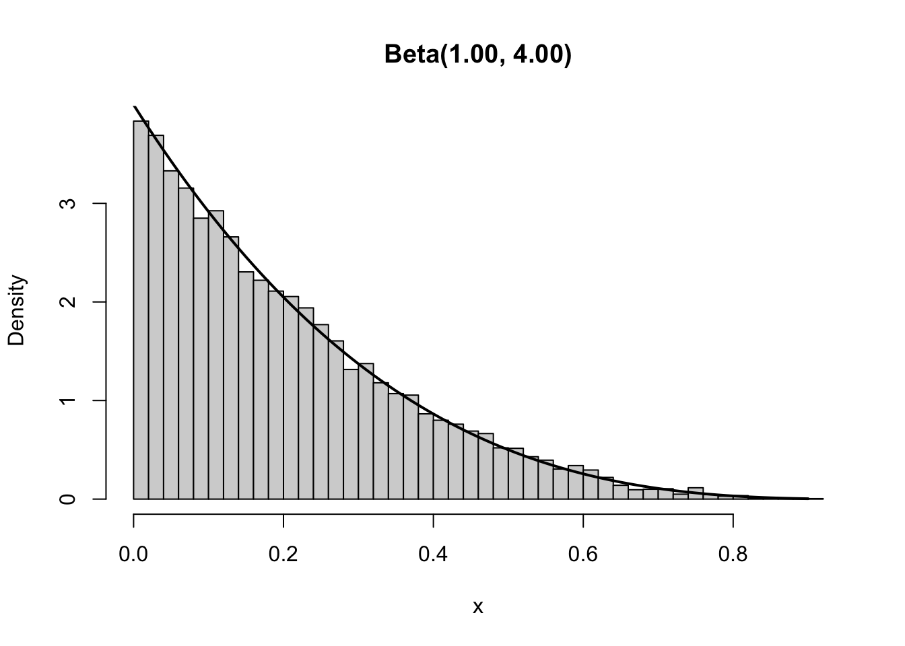
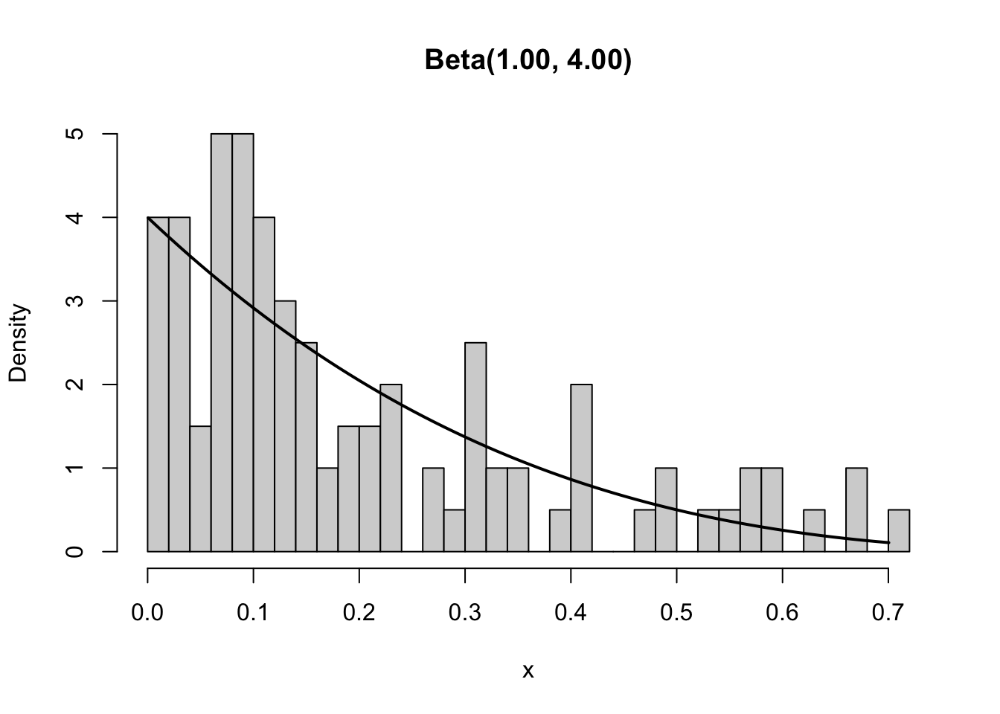
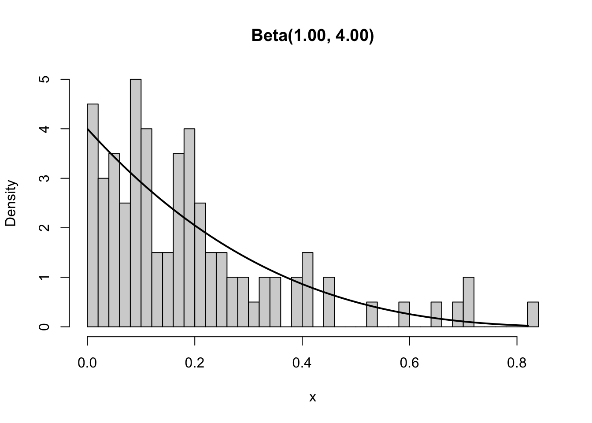

1 + 1[1] 2Many problems are first simulated before they are solved theoretically. Simulations provide often the intuition and understanding that is needed to appropriately tackle the problem from a theoretical point of view. Additionally, simulations can be used to verify that theoretically derived results are correct. Therefore, simulations play an important role in modern probability theory, statistics, and most other quantitative fields. We will therefore use simulations throughout these notes to gain a better understanding of the theory, but also to solve problems for which either no closed-form solutions exist, or for which these closed form solutions are difficult to obtain.
We could do these simulations by hand and in the past we might have, but simulations by hand are slow and not what is actually done anymore. Instead, we rely on computers to simulate thousands if not millions of cases in a few seconds. This requires us to be able to program - to be able to tell the computer how and what to simulate. This does not require you to become the world best software engineers, but it does require you to learn how to code.
In these notes, we will focus on the R programming language. R is probably the most used programming language in econometric research, and probably the second most used language in data science, data analytics, and related jobs. Thus, learning R does not just allow you to gain a better understanding of what you will learn during this course, but also gives a skill that is directly valued in the industry.
Some of you might wonder why we do not teach you Python since it seems to be the most famous programming language. This is simply due to that most research in econometrics and most econometric theory is still firts implemented in R. Additionally, R will be your trustworthy companion throughout the rest of you studies. Lastly, we do not teach you R just so that you are able to code in R. Instead, we hope you take away a special kind of thinking that applies to coding in general. Learning how to code is not just about learning the syntax of a programming language; it is about learning how to think in a very specific way. Once you are able to think like a coder, you will quickly be able to learn any programming language, including Python.
Almost all programming languages, including R, are what is called Turing complete. This means, given enough time and memory, they can solve any computational problem. This also means, that there are a lot of things one could do with a programming language which necessarily comes with a lot of things that one could learn. We will therefore not be able to teach you all about coding and R, but instead will focus on what is necessary in probability theory and econometrics in general. We will therefore mostly focus on how to do mathematics, how to simulate, and how to communicate results. Later courses in the Econometrics and Operations Research bachelor will teach you some more programming related to data science and operations research, and what you will learn here will hopefully form a good basis for these future courses.
Most people use R together with the great development environment R Studio. We therefore recommend that you install both. R can be downloaded from the r-project and we recommend that you follow the instructions for installation given there. R Studio can be downloaded from Posit. Note that the name Posit is relatively new and until recently the company was still called R Studio - so like the development environment itself.
After opening R Studio, you should see a window like in Figure 1.1 except that yours is likely still in light mode. On the left-hand-side is the console, while the two panes on the right-hand-side show you a history of the last commands, and the current environment. The current environment shows you all the variables that are currently available in your environment. This should be empty when you first start R Studio. We will cover in Section 1.4 what variables are and how you can use them. The console, on the other hand, is where we can write commands that are immediately executed after pressing enter. We do not recommend that you work in the console unless you just want to test something. Instead, we recommend you always work in an R-script. You can open a new R-script by pressing File >> New File >> R Script.

We recommend that you open a new R Script for this section and follow along as you read. Programming is not something that can be learned by just reading about it. You really have to try things and experiment with them. So feel free to change things around and see what happens.
R is what is called an interpreted programming language. Contrary to compiled programming languages, interpreted programming languages can be used interactively. Thus, upon opening a new R script, and writing something in a line, it can be immediately executed by pressing CMD + ENTER. R can thus be used as a calculator like any other calculator. For example, we can do simple additional by typing the following into a line and executing it.
1 + 1[1] 2What you see in grey above is the code that we are talking about. Here, we asked you to calculate 1+1 which I hope everyone knows is equal to two. This result is given immediately below the code above. This structural will be generally followed throughout these notes, with a few exceptions. If code would throw an error, meaning that it is broken and something is wrong with it, we will generally not provide any code output. Other exceptions will be made explicitly clear when they occur.
R can obviously not just do addition. Any operation that you would be able to do on a standard calculator can also be done in R. The code cells below show how subtractions, -, division, /, and multiplication, *, are performed.
11 - 3[1] 81 / 3[1] 0.333333355 * 1234[1] 67870The order in which R executes operations is not always clear. For example, the following became famous online because people either argue that the solution is 1 or that the solution is 16. Technically both is correct since it depends on the precendence of * over / or the other way around, and no unique standard has been formed regarding this precedence. R indeed puts both / and * on the same precendence order but makes clear that in case of two operators within the same precendence order, operations will be performed from left to right. Thus, as is shown below, the result R provides is equal to 16.
8 / 2 * (2 + 2)[1] 16Clearly, specifying the order of operations is important and although R has a standard, it might not be clear to everyone. Thus, it is good practice to explicitly show in which order operations are performed by using paranthesis, as shown below. The parenthesis below indicate that we want the multiplication to be performed before the division, which results in the second often argued for answer of 1.
8 / (2 * (2 + 2))[1] 1Although we will largely focus on scalar operations in the first part of these notes and the course, scalar operations are not ideal for some problems. You should have seen in Linear Algebra, that working with vectors and matrices often comes with advantages. R can be used with matrices and vectors. Indeed, all numerical values are technically vectors in R, even what we would usually call a scalar.
To create a matrix in R, we call our first function. The function takes arguments, which are the things that we provide, and returns a result. The function matrix takes as its first argument a list of numbers, c(1, 2, 3, 4). Vectors and lists of numbers always start with c(...) in R. The list of numbers are the numbers of the matrix. Additionally, we need to provide the dimensions of the matrix; two rows and two columns are chosen here. The list of numbers must contain as many numbers as the matrix has entries.
# R is column major and thus fills columns before filling rows
matrix(c(1, 2, 3, 4), nrow = 2, ncol = 2) [,1] [,2]
[1,] 1 3
[2,] 2 4The matrix returned by R has as its first column c(1, 2) and as its second column c(3, 4). This might not be immediately what you expected. Many expect the numbers to be filled row-wise. R uses column-major order though, which means that R stores matrices as a long list of numbers with consecutive numbers corresponding to consecutive entries in a column of the matrix, unless the first number is the last entry in the column in which case the next number will be the first entry in the next column. In simple terms this means that R will always fill columns first unless specified otherwise. We can specify that we want the rows to be filled first by adding the additional argument byrow = TRUE.
matrix(c(1, 2, 3, 4), nrow = 2, ncol = 2, byrow = TRUE) [,1] [,2]
[1,] 1 2
[2,] 3 4As you might have noticed, the first time we created a matrix, we did not specify the argument byrow. Functions often allow user to specify only a few arguments with the remaining arguments either having default values or being derived using the provided arguments. For example, given the list of numbers has four values, it suffices to provide the nrow = 2 argument, therefore specifying that the resulting matrix must have two rows, which directly implies that the matrix must have two columns.
matrix(c(1, 2, 3, 4), nrow = 2) [,1] [,2]
[1,] 1 3
[2,] 2 4To see which arguments a function takes and which arguments are necessary, you can always consult the help. The easiest way to do so it to type ?function_name into the console, where function_name should be replaced with the actual function name. For example, to get information and help for the matrix function, type
?matrixAssuming that you will not use any Large Language Models (LLMs) would be foolish and forcing you to not use them would mean we stop you from learning a skill that might be invaluable in your future career. We therefore would like to point out that Large Language Models can often help when programming, but their output should not be blindly trusted. For example, in our experience, some of the LLMs will tell you that both the nrow and ncol arguments are necessary. This is clearly not the case. Additionally, while LLMs can be helpful, they can also be a curse. Overly relying on them often implies that you will learn less which eventually implies that you will have trouble in later sections and courses that work on problems that are notoriously difficult for LLMs.
Now that you know how to create a matrix, we can also perform mathematical operations between matrices and vectors. The first is to use the * operator on two matrices. The * applied to scalars multiplies these scalars. Thus, it is only natural to think that * applied to two matrices will multiply these two matrices. As you see below, this is indeed what is does. However, it does not matrix-multiply the two matrices. Instead, it multiplies them element-wise.
matrix(c(1, 2, 3, 4), nrow = 2) * matrix(c(1, 2, 3, 4), nrow = 2) [,1] [,2]
[1,] 1 9
[2,] 4 16For matrix-multiplication, R uses the %*% operator between two matrices, two vectors, or a vector and a matrix. The functionality of %*% exactly follows the rules you learned in Linear Algebra.
matrix(c(1, 2, 3, 4), nrow = 2) %*% matrix(c(1, 2, 3, 4), nrow = 2) [,1] [,2]
[1,] 7 15
[2,] 10 22matrix(c(1, 2, 3, 4), nrow = 2) %*% c(5, 6) [,1]
[1,] 23
[2,] 34Sometimes we do want to use the element-wise multiplication. In those cases, it is helpful to know how element-wise multiplication works for two arrays (matrices and vectors) that are of different sizes and dimensions. When multiplying a matrix with a vector that has the same length as the total number of elements in the matrix, R will take the vector an element-by-element multiply the element in the matrix with the element in the vector. The order here is again column-major, implying that the first element of the vector is multiplied with the first element in the first column of the matrix, the second element in the vector is multiplied with the second element in the first column of the matrix, and so on.
matrix(c(1, 2, 3, 4), nrow = 2) * c(1, 2, 3, 4) [,1] [,2]
[1,] 1 9
[2,] 4 16If the vector has fewer elements than the total number of entries in the matrix, but the total number of elements in the matrix is a multiple of the vector length, then the vector will be recycled. That means, that the multiplication will be performed as above. If the last element of the vector was used, the next entry in the matrix will be multiplied with the first element in the vector again. Thus, R loops through the vector until all entries in the matrix have been multiplied with some element in the vector.
matrix(c(1, 2, 3, 4), nrow = 2) * c(1, 2) [,1] [,2]
[1,] 1 3
[2,] 4 8However, if the vector length is not a multiple of the total number of elements in the vector, either an warning is thrown, or the calculation is throwing an error. In general, if a warning as below occurs, something is likely wrong in your code and you should not trust the result unless you double checked that everything is correct.
matrix(c(1, 2, 3, 4), nrow = 2) * c(1, 2, 3)Warning in matrix(c(1, 2, 3, 4), nrow = 2) * c(1, 2, 3): longer object length
is not a multiple of shorter object length [,1] [,2]
[1,] 1 9
[2,] 4 4# This will throw an error.
matrix(c(1, 2, 3, 4), nrow = 2) * c(1, 2, 3, 4, 5)All the rules above for point-wise multiplication also apply to point-wise multiplication from the left.
c(1, 2, 3, 4) * matrix(c(1, 2, 3, 4), nrow = 2) [,1] [,2]
[1,] 1 9
[2,] 4 16c(1, 2) * matrix(c(1, 2, 3, 4), nrow = 2) [,1] [,2]
[1,] 1 3
[2,] 4 8In more general, they apply to any point-wise multiplication betwen two arrays, no matter their dimension. Thus, when point-wise multiplying two vectors of different lengths, similar rules to the ones above apply.
The first advantage of R over many simple calculators is the ability to save results in variables. Variables are like little boxes in which a slip of paper can be put. The paper might have a word, a sentence, an entire text, a number, or anything else on it. Similarly, a variable can hold a string, which is just text, or a numerical value, or any other objects. Each variable must have a name, which is like a little label on the box that allows us to reuse the variable later on by referring to it. This also implies that each box must have a unique label - each variable must have a unique name.
Instead of always creating the matrix of the previous section from scratch, we could have also saved it to a variable called A. Object can be saved to variables by using the assignment operator <-. While most programming languages use the = as an assignment operator, there is a slight difference between = and <- in R. So, to be on the safe side, always use <- for assignment to variables.
A <- matrix(c(1, 2, 3, 4), nrow = 2)
A [,1] [,2]
[1,] 1 3
[2,] 2 4B <- matrix(c(5, 6, 7, 8, 9, 10), nrow = 2)
B [,1] [,2] [,3]
[1,] 5 7 9
[2,] 6 8 10As the two examples above show, the content of variables can be printed to the console by simply calling the variable. However, variables can also be used in calculations by referring to their names. For example, the product of the matrix A and B, which we then save as matrix C, can be obtained in the following way
C <- A %*% B
C [,1] [,2] [,3]
[1,] 23 31 39
[2,] 34 46 58Similarly, any other operations introduced in the previous section can be applied to variables, as long as the variable is holding an appropriate object. So for mathematical operators, the variables must correspond to correct matrices and vectors or scalars.
We can double check the above matrix multiplication by manually calculating the first entry of C. From Linear Algebra you should know that
\[ C_{1,1} = A_{1,1}B_{1,1} + A_{1,2}B_{2,1}. \]
Two obtain the elements in the matrix, we can index into the matrix. Indexing is performed using square brackets. Since matrices are two dimensional arrays, indexing into matrices requires two numbers. The first number corresponds to the row, and the second to the column. Thus, the calculation above can be performed in the following way:
C11_manual <- A[1, 1] * B[1, 1] + A[1, 2] * B[2, 1]
C11_manual[1] 23Although we said above that indexing into matrices requries two numbers, this is not technically correct if one is not interested in a single element of the matrix. If we are interested in an entire row or column of a matrix, then the column or row element within the square brackets can be left empty.
From linear algebra you should also know that
\[ C_{1,1} = A_{1,\cdot}B_{\cdot,2}. \] Thus, we can double check the result in the following way
C11_vector_product <- A[1, ] %*% B[, 1]
C11_vector_product [,1]
[1,] 23Indexing for vectors works similar to indexing matrices with the only difference being that vectors only have a single dimension. To demonstrate this, we first create a vector containing the integers from 1 to 10, which is created using 1:10.
x <- 1:10
x [1] 1 2 3 4 5 6 7 8 9 10The third element of this vector is then equal to 3.
x[3][1] 3We can also return a subset of the vector by specifying multiple indices. If the indices of interest are consecutive, then we can use : to specify the indices. For example, if we are interested in the first five elements of the vector, we can use 1:5 within square brackets.
x[1:5][1] 1 2 3 4 5R comes with some handy pre-loaded vectors, including the letters vector, which contains all letters from a to z.
letters [1] "a" "b" "c" "d" "e" "f" "g" "h" "i" "j" "k" "l" "m" "n" "o" "p" "q" "r" "s"
[20] "t" "u" "v" "w" "x" "y" "z"To obtain the first, third, fifth, and seventh letter in the alphabet, we can use c(1, 3, 5, 7) within square brackets after letters to index into the first, third, fifth, and seventh element in the vector.
letters[c(1, 3, 5, 7)][1] "a" "c" "e" "g"If you carefully followed to above, you should have noticed that we used c(1, 3, 5, 7) to index into the letters vector. Thus, we technically used a vector to index into another vector. This indeed works, as long as the vector used for indexing contains only integers of Booleans. Additionally, the vector used for indexing can only contain elements between 1 and the length of the vector that is being indexed. Since there are more than ten letters in the alphabet and since x contains all integers from one to ten, we can use x to index into the letters vector.
letters[x] [1] "a" "b" "c" "d" "e" "f" "g" "h" "i" "j"As pointed out above, we can also use a vector of Booleans to index into a vector. A Boolean is either zero (FALSE) or one (TRUE). Although the vector of Booleans must not technically be of the same length as the vector that is being indexed, we highly recommend to always choose vectors of same length since the results otherwise rely on vector recycling which, as we discussed in the point-wise multiplication case, does not always return what you might expect.
When using a Boolan vector for indexing, a TRUE within the Boolean vector implies, that the corresponding element in the vector that is being indexed, is being returned, while a FALSE implies, that the corresponding entry will not be returned.
x[c(TRUE, TRUE, FALSE, FALSE, FALSE, TRUE, TRUE, FALSE, FALSE, TRUE)][1] 1 2 6 7 10Boolean indexing combined with conditional statements can often be useful. While we introduce conditionals only below, we will shortly touch on them here to show the power of Boolean indexing.
The goal below is to obtain a vector of all even numbers between 1 and 100. To do so, we are using the modulus, %%, operator. The modulus returns the remainder after division. Since all even numbers can be divided by two without a remainder, the modulus of an even number with two will always be zero. On the other hand, an odd number is always one more than an even number and thus, the modulus between an odd number of two will always be one.
10 %% 2[1] 011 %% 2[1] 1We can combine this with the conditional == which returns TRUE if the left-hand-side is the same as the right-hand-side, while it returns FALSE otherwise.
10 %% 2 == 0[1] TRUE11 %% 2 == 0[1] FALSELike any operator in R, the modulus and the conditional can be applied point-wise to a vector of numbers. Thus, after creating the vector x which contains all numbers from 1 to 100, we can take the modulus of all numbers in x with two and check whether it is zero. We save this result in the new variable x_even_selector. Note, that we tried to give the new variable a descriptive name. In general, this is good practice, and bad variable names usually lead to mistakes later on.
x <- 1:100
x_even_selector <- x %% 2 == 0
x_even_selector [1] FALSE TRUE FALSE TRUE FALSE TRUE FALSE TRUE FALSE TRUE FALSE TRUE
[13] FALSE TRUE FALSE TRUE FALSE TRUE FALSE TRUE FALSE TRUE FALSE TRUE
[25] FALSE TRUE FALSE TRUE FALSE TRUE FALSE TRUE FALSE TRUE FALSE TRUE
[37] FALSE TRUE FALSE TRUE FALSE TRUE FALSE TRUE FALSE TRUE FALSE TRUE
[49] FALSE TRUE FALSE TRUE FALSE TRUE FALSE TRUE FALSE TRUE FALSE TRUE
[61] FALSE TRUE FALSE TRUE FALSE TRUE FALSE TRUE FALSE TRUE FALSE TRUE
[73] FALSE TRUE FALSE TRUE FALSE TRUE FALSE TRUE FALSE TRUE FALSE TRUE
[85] FALSE TRUE FALSE TRUE FALSE TRUE FALSE TRUE FALSE TRUE FALSE TRUE
[97] FALSE TRUE FALSE TRUEThe x_even_selector vector is now a Boolean vector, having a TRUE at entry i if and only if the ith entry of x is even. Thus, we can use the x_even_selector vector to index into x and obtain all even numbers between 1 and 100.
x[x_even_selector] [1] 2 4 6 8 10 12 14 16 18 20 22 24 26 28 30 32 34 36 38
[20] 40 42 44 46 48 50 52 54 56 58 60 62 64 66 68 70 72 74 76
[39] 78 80 82 84 86 88 90 92 94 96 98 100Another way to obtain all even numbers between 1 and 100 would have been to use the seq function, starting at 2 and incrementing by 2 until 100 is reached.
seq(2, 100, 2) [1] 2 4 6 8 10 12 14 16 18 20 22 24 26 28 30 32 34 36 38
[20] 40 42 44 46 48 50 52 54 56 58 60 62 64 66 68 70 72 74 76
[39] 78 80 82 84 86 88 90 92 94 96 98 100Clean code is important. This is a statement we already made above but one that we wish to emphasise again. Clean code allows others to easily follow your code and allows yourself to understand your code even after an extended time of not working on it. Clean code is therefore the first step in making code and research replicable. The first step towards clean code is to use descriptive variable names. Compare, for example the two code snippets below. The first one is a copy of a previous one and gives a descriptive name to the selector variable. The second snippet gives the selector the often chosen name temp. Although tempting, temp is not an appropriate name for a variable which you should see by noticing that the first snippet is much easier to understand than the second snippet.
x <- 1:100
x_even_selector <- x %% 2 == 0
x[x_even_selector] [1] 2 4 6 8 10 12 14 16 18 20 22 24 26 28 30 32 34 36 38
[20] 40 42 44 46 48 50 52 54 56 58 60 62 64 66 68 70 72 74 76
[39] 78 80 82 84 86 88 90 92 94 96 98 100x <- 1:100
temp <- x %% 2 == 0
x[temp] [1] 2 4 6 8 10 12 14 16 18 20 22 24 26 28 30 32 34 36 38
[20] 40 42 44 46 48 50 52 54 56 58 60 62 64 66 68 70 72 74 76
[39] 78 80 82 84 86 88 90 92 94 96 98 100Descriptive variable names are only the first step towards clean and understandable code. If variable names cannot reflect sufficient information, then comments should be used. Comments can be added after a code line by separating the comment from the code using two spaces. A comment in R starts with # and everything after # will not be executed - it is simply a short note from the programmer to the reader of the code, which might be the programmer itself.
x <- 1:100
x_even_selector <- x %% 2 == 0 # Checking if the number is even
x[x_even_selector] [1] 2 4 6 8 10 12 14 16 18 20 22 24 26 28 30 32 34 36 38
[20] 40 42 44 46 48 50 52 54 56 58 60 62 64 66 68 70 72 74 76
[39] 78 80 82 84 86 88 90 92 94 96 98 100Although comments are recommended, it is bad practice to comment each line of code. If you have to comment each line of code, then your code is bad. So technically the comment above is not necessary since the variable name is descriptive enough.
Instead of adding comments after a line of code, comments are much more often added before a line of code. In scripts, these comments often explain what the following lines of code are doing. We generally recommend writing functions having as little as possible code outside of functions. Functions are covered in a later section.
# Selecting the even integers within the first 100 integers.
x <- 1:100
x_even_selector <- x %% 2 == 0
x[x_even_selector] [1] 2 4 6 8 10 12 14 16 18 20 22 24 26 28 30 32 34 36 38
[20] 40 42 44 46 48 50 52 54 56 58 60 62 64 66 68 70 72 74 76
[39] 78 80 82 84 86 88 90 92 94 96 98 100When using comments, think about what is needed to understand the code. If you have some weird calculation going on, explain the calculation. If you have some condional statement that is not immediately clear, explain it. But do not overdo it. Do not write a comment like # dividing by 100. We can see that you are doing it. What we might be interested in is why you are dividing by 100.
Another helpful strategy to make code cleaner is to split long line. In general, code lines should not be too long and post programmers will aim to keep code lines less than 80 characters long. The reason for this is that long code lines are often difficult to read and occasionally require a horizontal scrolls, which might not be immediately clear to the person that is reading the code. For example, consider a problem in which you need to make the following long calculation.
1 + 123 * 1591 / 1298575 - 124 + 1294 * 19275 / 193587 - 129875 + 19257 * 1957 + 1957135 - 195715 + 195875 / 15975 * 1575 / 1957125 * 135105 + 197515 / 1957135[1] 39318833Clearly the long calculation above is difficult to understand. Why are you dividing at one point and multiplying at another? Long calculations such as the ones above are usually a result from merging multiple calculations together. Thus, the first strategy to make it more readable is to split the code over multiple lines as is shown below. This also gives you the ability to comment each line of code and therfore to explain why you divide at one point by multiply at another.
1 +
123 * 1591 / 1298575 -
124 + # Each of these lines can contain a comment
1294 * 19275 / 193587 -
129875 +
19257 * 1957 +
1957135 -
195715 +
195875 / 15975 * 1575 / 1957125 * 135105 +
197515 / 1957135[1] 39318833Although the above is a possible solutions, it is still not clean code. Clean code would instead split the calculation into parts and save each part in a variable with a descriptive name. Yes, we failed to give the variables a descriptive name, but in your calculation, each step should mean something so you should be able to give them descriptive names. The sub-calculations can then be all merged together and saved in a variable holding the final result. Also this variable should have a descriptive name that follows from the calculation you are doing. For example, if you are calculating the expected value of a European option, then the name of the final variable could be european_option_value or simply value if it is clear from the code above that it is the European option value.
calculation_part1 <- 1 + 123 * 1591 / 1298575
calculation_part2 <- -124 + 1294 * 19275 / 193587
calculation_part3 <- -129875 + 19257 * 1957 + 1957135
calculation_part4 <- -195715 + 195875 / 15975 * 1575 /
1957125 * 135105 + 197515 / 1957135
final_result <- calculation_part1 +
calculation_part2 +
calculation_part3 +
calculation_part4
final_result[1] 39318833Loops and conditional statements are what makes programming truly powerful. Loops allows us to repeat something multiple times in a speed that we could never match if we had to do it by hand. Conditional statements, on the other hand, allow us to execute something only if a certain condition holds. Combining these two allows one to do pretty much anything. We will focus on loops first and will cover conditional statements below.
There are two kinds of loops that are commonly used. The first, the for loop, is used when the number of iterations is known a priori. The second, the while loops, is used if the number of iterations is not a priori known. The for loop is specified using the for command, followed by a statement in parenthesis. The statement in parenthesis contains the looping variable, here i, and what the looping variable should loop over, here the numbers from 1 to 1000. Thus, the loops is iterating 1000 times. The code that is executed in each iteration of the loop is enclosed in curly brackets. Some people like to start the curly brackets on a new line, while we prefer to start the curly brackets on the same line on which the for command. In either case, the closing curly bracket is on a new line following the last command executed in each iteration.
To demonstrate the for loop, we use the sequence definition of the Euler number:
\[
e = \lim_{n\to\infty} \left(1 + \frac{1}{n}\right)^n
\] Using a for loop, we can obtain the first 1000 elements of this sequence and use them as approximations to \(e\).
e_approximation <- c()
for (i in 1:1000) {
e <- (1 + 1/i)^i
e_approximation <- c(e_approximation, e)
}
e_approximation[990:1000] [1] 2.716910 2.716912 2.716913 2.716914 2.716916 2.716917 2.716918 2.716920
[9] 2.716921 2.716923 2.716924To check how good these approximations are, and to check how fast the sequence approaches the Euler number, we first need to know what the Euler number actually is. R comes with the \(exp\) function which corresponds to \(e^x\). Thus, exp(1) is the same as \(e\) and equals
exp(1)[1] 2.718282The approximation error is then obtained by subtracting \(e\), or equivalently exp(1), from each sequency point and taking the absolute value.
e_approximation_error <- abs(e_approximation - exp(1))To obtain the first and last ten values of the e_approximation_error vector, we use the head and tail functions respectively, and use the n argument to specify how many values we would like to be returned. As you can see, the last ten values are already correct up to the third decimal.
head(e_approximation_error, n = 10) [1] 0.7182818 0.4682818 0.3479115 0.2768756 0.2299618 0.1966555 0.1717821
[8] 0.1524973 0.1371070 0.1245394tail(e_approximation_error, n = 10) [1] 0.001370217 0.001368837 0.001367460 0.001366085 0.001364714 0.001363345
[7] 0.001361978 0.001360615 0.001359254 0.001357896The for loop above specified within the statement in parenthesis the number of iterations. This is bad practice since the number of iterations is often used in multiple places within the code. It is thus better to specify a variable that holds the number of iterations. A common variable name is N but sometimes a more explicit name is needed if N might be confusing in the context. Using N <- 1e6, we can obtain the first one million elements of the sequence definition of the Euler number. The last ten elements of this sequence are almost equal to the Euler number, at least to a precision that would be enough for most real world applications.
N <- 1e6
e_approximation_error <- matrix(nrow = N, ncol = 2)
colnames(e_approximation_error) <- c("i", "e_approximation")
for (i in 1:N){
e <- (1 + 1/i)^i
e_approximation_error[i, ] <- c(i, abs(e - exp(1)))
}head(e_approximation_error, n = 10) i e_approximation
[1,] 1 0.7182818
[2,] 2 0.4682818
[3,] 3 0.3479115
[4,] 4 0.2768756
[5,] 5 0.2299618
[6,] 6 0.1966555
[7,] 7 0.1717821
[8,] 8 0.1524973
[9,] 9 0.1371070
[10,] 10 0.1245394tail(e_approximation_error, n = 10) i e_approximation
[999991,] 999991 1.359232e-06
[999992,] 999992 1.359426e-06
[999993,] 999993 1.359022e-06
[999994,] 999994 1.359227e-06
[999995,] 999995 1.359437e-06
[999996,] 999996 1.359049e-06
[999997,] 999997 1.359270e-06
[999998,] 999998 1.358894e-06
[999999,] 999999 1.359126e-06
[1000000,] 1000000 1.359363e-06What if we do not want to know the approximation error of the first N elements of the sequence, but rather would like to know when the sequency is within a pre-specified distance of the Euler number. In this case, the number of iterations is not a priori known. We therefore need to use a while loop. A while loops executes the code within curly brackets until the statement in parenthesis is false. This requires one to update the variables that are used in the statement within parenthesis, because otherwise the statement in parenthesis will always be true and the while loops will run for over; a so-called infinite loop. Care must therefore be taken when working with while loops.
Although conditions are only covered in the next section, we use one here. The statement in parenthesis reads abs(e - exp(1)) > 1e-4. This statement is true whenever the absolute distance between the variable e and exp(1) is greater than 0.0001. Thus, it is only false when the approximation is correct to the fourth decimal. To make sure that this statement is false at some point, we need to update the variable e within the while loop.
i <- 1
e <- (1 + 1/i)^i
while (abs(e - exp(1)) > 1e-4) {
i <- i + 1
e <- (1 + 1/i)^i
}
i[1] 13591abs(e - exp(1))[1] 9.999627e-05Since we defined i and e already outside the while loop, we can also access their values after the while loop has stopped. The sequence is therefore within 1e-4 of the Euler number after element
i[1] 13591We have introduced loops in the previous sections. This section will introduce the other powerful concept in programming: conditionals. Conditionals, as the name hint at, allow to execute code only if a condition is true. For example, if we would like to execute code only when the random \(\text{Uniform}(0, 1)\) variable is less than 0.5, then the code within the conditional will only execute with a probability of 50%. Conditionals therefore allow us to split our code into sections each of which will only be executed if a pre-specified condition is true.
A condition in R connects a left-hand-side with a right-hand-side by using one of the following operators:
==: True if and only if the value on the left-hand-side equals the value on the right-hand-side.>: True if and only if the value on the left-hand-side is greater than the value on the right-hand-side.>=: True if and only if the value on the left-hand-side is greater or equal to the value on the right-hand-side.<: True if and only if the value on the left-hand-side is less than the value on the right-hand-side.<=: True if and only if the value on the left-hand-side is less or equal to the value on the right-hand-side.!=: True if and only if the value on the left-hand-side is not equal to the value on the right-hand-side.!x: True if and only if x is FALSE.||: True if and only if either the left-hand-side is true, or the right-hand-side is true, or both are true. Not vectorised.|: True if and only if either the left-hand-side is true, or the right-hand-side is true, or both are true. Operates element-wise on arrays.&&: True if and only if both the left-hand-side and the right-hand-side are true. Not vectorised.&: True if and only if both the value on the left-hand-side and the value on the right-hand-side are true. Operates element-wise on arrays.When stating a conditional in natural language, we often use ‘if’ to denote that what we are talking about is a conditional. Similarly, we can use if in R to denote that the code in the following curly brackets should only be executed if the conditional statement within parenthesis is true. Take the example below. The conditional in parenthesis is testing whether x is less than eleven. Only if this is the case, will we see x < 11 printed out. Test this out by changing x to some other value that violates the condition in parenthesis.
x <- 10
if (x < 11) {
print(paste(x, "< 11"))
}[1] "10 < 11"While if statements are nice, what would we do if we want an ‘else’ or ‘otherwise’? In natural language we often connect ‘if’ with an ‘else’ or ‘otherwise’ to communicate that if the condition is not true, then something else will happen. For example, this years INKOM had options for both rainy and non-rainy days which would be translated as: “If it is raining, we meet in the MAC, else we meet in the park.”. ‘Else’ statements are powerful and thus also a part of programming. Just as an ‘if’ statement can be implemented using if, an ‘else’ can be implemented using else. Extending the example above, we can now also provide some text if x is not less than eleven. Try out what happens when you change x to some other number.
x <- 11
if (x < 11) {
print(paste(x, "< 11"))
} else {
print(paste(x, ">= 11"))
}[1] "11 >= 11"Although we strongly suggest to strick to if and else, sometimes there is no way around futher complicating the code by using else if. else if is like an additional check. If the first if or a previous else if did not execute, then the condition within the parenthesis in the current else if will be checked and the code in curly brackets will be executed if the condition is true.
x <- 13
if (x < 11) {
print(paste(x, "< 11"))
} else if (x == 11) {
print(paste(x, "= 11"))
} else {
print(paste(x, "> 11"))
}[1] "13 > 11"We do not recommend the use of else if statements, because they quickly become complex and often better methods exist. Consider the example below. We could have continued in this way for ever, but usually there are better methods to do such comparisons. Throughout these notes you are likely to find some of these better methods and we will try to point them out when they show up.
x <- 13
if (x == 1) {
print(paste(x, "= 1"))
} else if (x == 2) {
print(paste(x, "= 2"))
} else if (x == 3) {
print(paste(x, "= 3"))
} else if (x == 4) {
print(paste(x, "= 4"))
} else if (x == 5) {
print(paste(x, "= 5"))
} else if (x == 6) {
print(paste(x, "= 6"))
} else if (x == 7) {
print(paste(x, "= 7"))
} else if (x == 8) {
print(paste(x, "= 8"))
}We have already shown in a previous section that Booleans can be used to index into an array. Since conditionals, except && and ||, all operate element-wise, we can also apply a logical operator to a vector which will return a Boolean vector of the same length. So, if we want to filter a vector for values that are less than -0.9, then all we need to do is to write x[x < -0.9]. The condition inside the square brackets will return a Boolean vector that has TRUE at a position if and only if the corresponding element in x is less than -0.9, and thus the indexing will only return such values.
# logical operators work element-wise
x <- 1:10
x > 5 [1] FALSE FALSE FALSE FALSE FALSE TRUE TRUE TRUE TRUE TRUEN <- 1000
x <- runif(N, min = -1, max = 1)
x[x < -0.9] [1] -0.9214451 -0.9346031 -0.9054423 -0.9243546 -0.9635126 -0.9334644
[7] -0.9017720 -0.9799582 -0.9390592 -0.9906611 -0.9574826 -0.9761756
[13] -0.9692404 -0.9599956 -0.9122123 -0.9674421 -0.9373762 -0.9229918
[19] -0.9348080 -0.9545931 -0.9008386 -0.9959790 -0.9752711 -0.9265550
[25] -0.9539772 -0.9060783 -0.9973903 -0.9916336 -0.9850346 -0.9588043The element-wise operation of logical operators can also be used to calculate proportions, probabilities, and counts. For example, we could approximate the probability that x < -0.9 if \(x \sim \text{Uniform}(-1, 1)\). You will learn throughout the course what this statement means, but the theoretical answer would be \(0.05\), so 5%. The simulated answer, using N draws comes close to this, and the larger you choose N, the closer will the simulated answer be to the theoretical answer. The sum in the code below sums up all elements in the vector given to it. Since we are giving it a Boolean vector (because we have a logical operator applied to a vector), we are summing over Booleans. A TRUE is represented by a 1, while a FALSE is represented by a 0. Thus, the sum will return the number of elements in x that are less than -0.9. Dividing by N will then give the proportion which is approximately equal to the theoretical probability.
N <- 1000
x <- runif(N, min = -1, max = 1) # drawing N Uniform(-1, 1) numbers
probability <- sum(x < -0.9) / N
probability[1] 0.051Care must be taken when applying logical operators to a vector and using the result in an if statement. Since the logical operator works elementwise, the conditional will return a vector. It is then not clear what this should mean for the if statement. Should the if statement be evaluated once per element in the vector? Only if all are true? Only if at least one element is TRUE? Due to this ambiguity, R requires a single Boolean within the parenthesis of an if statement. For example, the code below would throw an error. Do you see why?
# Throws the following error:
# Error in if (x > 5) { : the condition has length > 1
x <- 1:10
if (x > 5) {
print(paste(x, "> 5"))
}Since R requires a single Boolean within the parenthesis of an if statement, we need some way to summarise the information in a vector of Booleans. For example, if we would like to return TRUE if and only if all elements in the Boolean vector are true, then we can use the all function, which takes a Boolean vector and returns TRUE if and only if all elements are TRUE.
x <- 1:10
all(x > 5)[1] FALSESometimes we wish to execute an if statement as long as at least one element in the Boolean vector is TRUE. We can look ahead a bit and use a custom function to return TRUE if and only if at least one element in the Boolean vector is TRUE. We will discuss functions in more detail in the next section. Here, just note, that within the curly brackets after the function statement, it says return(sum(condition) >= 1) so the function returns sum(condition) >= 1 which is TRUE if and only if the sum over all Booleans in the Boolean vector is at least one. Since TRUE==1 and FALSE==0, this is only the case if at least one TRUE is in the Boolean vector.
at_least_one <- function(condition) {
return(sum(condition) >= 1)
}
x <- 1:10
at_least_one(x > 5)[1] TRUEConditionals become very powerful when they are connected together or negated. In natural language we often use ‘and’, ‘or’, and ‘not’. Similarly, in R we can use && and & for an ‘and’, || and | for an ‘or’, and ! for a ‘not’. The code below showcases each of them. Can you spot why the || will always be true?
x <- 10
if ((x < 15) && (x > 5)) {
print(paste("5 <", x, "< 15"))
}[1] "5 < 10 < 15"x <- 10
if ((x > 5) || (x < 15)) {
print("I am always true, why?")
}[1] "I am always true, why?"x <- 10
if (!(x > 5)) {
print(paste(x, "<= 5"))
}Functions are used a lot in programming. They can be imagined like small machines that take an input, work on it, and provide an output. This behaviour makes them ideal for complex projects, but we highly recommend using them for smaller projects too. Until this point, we have not used functions and thus everytime we wanted to re-do a certain operation, we had to write the entire code again. Functions mitigate this problem by providing a re-usable machine.
The syntax for a custom function looks at first like a variable assignment, with the variable name on the left-hand-side, followed by the assignment operator <-. However, contrary to a standard variable assignment, a function operator follows the assingment operator. Following in parenthesis after the function operator are the function arguments. These are the inputs to the little machines. In the at_least_one function, the only argument is the condition. The functionality of the function is then inside curly braces with the last line being a return statement. Although some functions do not return anything, most functions do. In the case of the at_least_one function, a Boolean is returned that is TRUE if and only if at least one element in the condition vector is TRUE. A custom function can then be called like any build-in function or method.
at_least_one <- function(condition) {
return(sum(condition) >= 1)
}
at_least_one(1:10 < 3)[1] TRUEThe advantage of functions is their reusability and the focus of doing just one thing. The focus of doing just one thing is enforced by the developer and is often the most difficult part. The reusablity comes almost at no cost, but must be planned in. For example, below we provide a function that samples from a half Normal distribution which is truncated below at zero. While this function is re-usable in the sense that we can sample from a half Normal truncated below at zero by just calling the function, it could have been more reusable by letting the user choose the upper and lower truncation points.
To sample from the half-normal distribution, we specify a single argument, n, corresponding to the desired number of samples. The actual sampling procedure then works by repeatedly drawing from a standard Normal distribution. If the drawn number is greater than zero, it is kept. On the other hand, if the value is less than zero, it is rejected and another draw is taken. This is not the most efficient algorithm, but the simplest one to implement. Note that we do not know the number of draws from the standard Normal distribution, since we could be unlucky and draw negative values for a very long time. Thus, we use a while loop which tests every time whether the previously drawn value is less than zero. If it is, it will draw another value, otherwise it will stop. Lastly, note that we have pre-specified the draws vector and initialised its values using NA. NA is a place holder that indicates missing values. We pre-specified the draws vector because it makes the algorithm faster than having to extend a vector everytime a draw is accepted. We recommend to always pre-specify matrices and vectors.
draw_half_normal <- function(n) {
draws <- rep(NA, n)
for (i in 1:n) {
r <- rnorm(1)
while (r < 0) {
r <- rnorm(1)
}
draws[i] <- r
}
return(draws)
}The draw_half_normal function can then be called as below, where we obtain 100 draws from a standard Normal truncated below at zero. The advantage of function, as previously pointed out, is their re-usability. To obtain more draws, all you need to do is to change the argument to the function; try this! Additionally, if we wanted to have two vectors of draws from the half Normal distribution, we could simply call the function twice and save the result in a new variable each time.
draw_half_normal(100) [1] 1.06829326 2.64030599 1.57568217 0.45795975 1.89231425 0.60117443
[7] 0.14974862 1.19358202 0.23132800 0.30544434 0.79852664 0.40176007
[13] 1.06190653 0.14195861 1.01748351 1.80935599 0.45634766 0.71258951
[19] 0.29306833 1.21529359 0.81563916 1.16060239 1.51532066 0.13712976
[25] 1.29560206 0.08338564 1.38337451 2.11407680 0.32888457 1.73445630
[31] 0.28729064 1.03011440 1.19322622 0.47369043 0.18408260 1.79702631
[37] 0.91306586 0.09770103 1.11523981 1.09932650 0.10948542 0.65641081
[43] 1.13971661 2.77011044 0.00968960 0.59212135 1.38249619 1.75676021
[49] 0.23394452 0.19645281 0.75794900 0.37805541 0.56511461 1.93693640
[55] 1.75872743 0.22720708 0.34157701 1.11485634 2.25688046 2.53088137
[61] 0.78767960 0.25743039 0.69177447 1.82585878 1.59800342 1.03442142
[67] 1.82092751 0.15366020 0.73412294 0.09150936 0.51497527 1.00711578
[73] 0.39582898 0.71314260 0.69802463 0.67282285 1.41389783 1.12925433
[79] 1.38314284 0.93537466 0.05058593 0.78853363 0.41945940 0.56873017
[85] 0.28762323 0.29908216 0.27770082 2.05949608 0.32469835 0.02509028
[91] 0.39917090 0.34928719 0.76670507 1.66528073 0.53298289 0.59982414
[97] 0.25801714 0.25904051 0.14476939 1.72817138You might wonder why we teach you to code in a probability theory class. The answer is simply that we believe that programming helps to gain intuition and helps to check your answers. More advanced students and researchers do this regularly. They often start of by first using code to experiment around, then use the intuition and insights gained from there to obtain theoretical results, which can then be compared to simulated results. If both theoretical and simulated results agree, then the theoretical result is likely correct. However, if the theoretical and simulated result disagree, then the researcher or student has to investigate whether the theoretical result or the simulated result is wrong.
An example of how to use this procedure is depicted below. We developed a simple way to draw from a Normal distribution that is truncated below at zero and implemented it in the draw_half_normal function. Naturally, there also exist theoretical results for the probability density distribution of such a truncated Normal distribution and the theory we will cover during this course will allow you to derive this theoretical form. Once the theoretical result has been derived, it can be compared to the simulated result by simulating many, here 1000, draws and plotting the density histogram, which can then be compared to the theoretical probability density. The histogram is represented by the grey bars, while the theoretical density is plotted in red. In our case, these are very similar, reassuring us that both the theoretical and simulated results are correct.
draws <- draw_half_normal(10000)
x <- seq(min(draws), max(draws), 0.01)
hist(draws,
breaks = 50,
freq = FALSE,
xlab = "",
main = "Draws of a half-Normal(0,1)")
lines(x, 2*(1/sqrt(2*pi))*exp(-0.5*x^2), col="red")
The previous example has shown that we can use functions to implement our own sampling procedure and compare the samples obtained from it with theoretical densities. Another common use of functions in probability theory is to simulate a single path of a stochastic process. Don’t worry about what a stochastic process is. For now imagine it as a sequence of random events that could possibly dependent. A common example of a stochastic process is a random walk. A random walk usually has the following setup: Imagine a drunk person that is current somewhere between the bar and their home. At each time point, the drunken person makes either a step forward or a step backward each with equal probability. A question we might be intersted in is the probability that the drunken person will reach their home in less than \(100\) steps. We might also be interested in the probability that the drunken person ends up back at the bar before they reach their home. In either case, we could either calculate the probability using theory, or we can simulate the random walk multiple times. We will postpone the answer to these questions to the simulation section. Instead, we focus for now on the implementation of a function that simulates a single random walk.
The function below simulates a simple random walk. Just as any function, it starts with a function keyword followed by arguments in the parenthesis. Different to previous functions you have seen, some of the arguments have default values. For example, start = 0 and step_size = 1. Default values should only be used if sensible defaults exist. If an argument has a default value, the argument must not be provided by the user. But, if the user provides a value for it, the default value will be overwritten. The actual implementation of the random walk is then relatively straight forward. We first initialise the current_position to be the start position. We also initialise a positions vectors which will store all the positions that were visited. Since we do not know the number of steps needed until the drunken person arrives either at home or back in the bar, we cannot give the vector a default length. Since we do not know the number of steps, we can also not use a for loop. Instead, we need to use a while loop. We also want the while loop to stop whenever the drunken person either arrived at home, which would mean that their position is greater or equal than stop_upper, or the person arrived back in the bar, which would mean that their position is less or equal than stop_lower. We thus run the while loop as long as the position is within stop_upper and stop_lower. In each iteration of the while loop, we first sample the direction of the step using sample(c(-1, 1), 1) which randomly returns either -1 or 1 with equal probability. The new current_position is then the old current_position plus the direction times the step size. The final two steps in the loop are saving the new position to the positions vector, and increasing the number of steps taken. Lastly, all functions you have seen so far had only a single return value. Sometimes we want to return more than one value. For example, here we would like to to return both the number of steps taken and the actual path taken. This can be achieved by using a list which, as shown below, can have named entries.
simulate_random_walk <- function(stop_lower, stop_upper, start = 0, step_size = 1) {
current_position <- start
positions <- c(current_position)
steps_taken <- 0
while ((current_position > stop_lower) && (current_position < stop_upper)) {
step_direction <- sample(c(-1, 1), 1)
current_position <- current_position + step_direction*step_size
positions <- c(positions, current_position)
steps_taken <- steps_taken + 1
}
return(list(
steps_taken = steps_taken,
path = positions
))
}The function we have just implemented can then be called like any other functions we developed before with the exception that default arguments can be left out when calling the function. To provide new values for the defaults, the arguments need to be specified by name: they are keyword arguments. The order in which they appear does not matter as long as you specify the name. This is in general true. Even for arguments that do not have default values, the order can be switched around if they are explicitly referred to by name. Below are three ways in which we could call the function. Note that the output is different each time since we work with random numbers. We will cover randomness in more detail in the next section. There we also cover how to make sure that the output is the same whenever we would want it to be the same.
simulate_random_walk(-20, 10, start = 0, step_size = 1)$steps_taken
[1] 188
$path
[1] 0 -1 0 1 2 1 2 3 2 3 4 5 4 5 4 5 4 5 6 7 6 7 6 7 8
[26] 9 8 7 8 9 8 9 8 9 8 9 8 7 8 7 6 7 8 9 8 7 6 5 6 7
[51] 6 5 4 3 4 3 4 3 2 1 0 1 2 3 4 5 6 5 4 5 4 5 4 3 2
[76] 3 2 1 0 -1 0 1 0 -1 0 1 2 1 0 -1 0 -1 -2 -1 -2 -1 -2 -1 0 -1
[101] 0 1 0 1 2 3 2 3 4 5 6 5 6 5 4 5 6 7 8 7 6 7 6 7 6
[126] 7 6 7 6 7 6 7 8 7 6 5 4 3 2 1 0 1 2 3 2 1 2 3 4 5
[151] 6 5 6 5 6 7 8 7 6 5 4 5 6 5 6 7 6 5 6 7 6 5 6 7 6
[176] 7 6 5 6 7 8 7 8 7 6 7 8 9 10simulate_random_walk(-20, 10)$steps_taken
[1] 70
$path
[1] 0 -1 -2 -1 -2 -3 -2 -3 -4 -5 -6 -5 -4 -3 -2 -1 -2 -1 -2 -1 -2 -3 -2 -1 -2
[26] -3 -4 -3 -2 -1 0 1 2 3 2 3 4 5 6 5 6 7 6 5 4 5 4 3 4 5
[51] 4 5 6 5 4 5 4 5 6 7 6 5 6 7 6 7 8 7 8 9 10simulate_random_walk(stop_upper = 10, stop_lower = -20)$steps_taken
[1] 258
$path
[1] 0 1 2 3 2 1 0 1 2 1 0 1 2 1 2 3 4 5
[19] 6 7 6 7 6 7 8 7 6 5 4 3 2 1 0 -1 -2 -3
[37] -4 -5 -6 -7 -6 -7 -8 -9 -8 -9 -8 -7 -6 -7 -8 -7 -8 -7
[55] -6 -7 -8 -9 -8 -9 -8 -9 -10 -11 -10 -9 -8 -9 -8 -7 -8 -7
[73] -6 -5 -4 -5 -4 -3 -4 -5 -4 -3 -2 -1 0 -1 -2 -3 -2 -3
[91] -4 -3 -4 -3 -2 -1 -2 -1 0 -1 -2 -1 -2 -1 0 1 0 1
[109] 0 -1 -2 -3 -2 -3 -4 -5 -4 -3 -4 -3 -2 -3 -4 -5 -6 -7
[127] -6 -7 -6 -5 -4 -3 -2 -1 -2 -1 -2 -3 -2 -1 -2 -1 0 1
[145] 2 3 4 3 2 1 2 3 2 3 2 1 0 1 0 -1 -2 -3
[163] -2 -1 -2 -1 -2 -3 -2 -1 0 1 2 1 0 -1 0 1 2 1
[181] 2 1 0 -1 -2 -3 -4 -3 -2 -3 -4 -3 -4 -3 -2 -1 -2 -3
[199] -2 -1 -2 -3 -2 -3 -2 -3 -4 -3 -4 -5 -6 -5 -4 -3 -4 -3
[217] -2 -3 -2 -1 0 1 0 -1 0 -1 0 1 0 1 2 3 4 5
[235] 4 3 4 3 2 1 2 1 2 3 4 3 4 3 4 5 4 5
[253] 6 7 6 7 8 9 10The function simulate_random_walk returns a list. The above output shows how this looks like. A list will generally be printed to the console by first writing the name of the element like $steps_taken followed on the next line by the actual content of that element. If we instead save the output of the function to a variable, that variable will also be a list. To get the named elements, we can simply put a $ after the variable name and speicify which element in the list we would like. This is shown below. Note that this only works for named lists.
random_walk <- simulate_random_walk(-20, 10)
random_walk$steps_taken[1] 380We have already used visuals above to understand what was going on and to check whether our simulations agree with our theoretical results. Visualisations will follow us throughout these notes, the course, and your entire career simply because they are one of the most natural ways of communicating results. For example, instead of looking at the endless long vector of positions in the console, we can simply plot the path, which is more intuitive to understand. We do this below by first obtaining the path from the named list and then plotting the path.
The first argument to plot are the x-cooredinates. Since these are simply the step numbers, we can simply provide a vector of integers from 1 to the number of steps taken, which we obtain using length(random_walk_path). The second argument to plot are the y-coordinates, which are the actual positions. Following this are some additional arguments. Check out the help using ?plot and see if you can figure out what they do. The two ablines are used to plot the home and bar positions respectively.
random_walk_path <- random_walk$path
plot(1:length(random_walk_path),
random_walk_path,
type = "l",
main = "Path of a Random Walk",
xlab = "Step",
ylab = "Position",
ylim = c(11, -21)
)
abline(h = 10, col="red")
abline(h = -20, col="red")
Stochastic processes are sequences of potentially dependent random events. These generally happen over time and thus the data obtained from stochastic processes are usually referred to as time series. A common question when working with time series is what the mean of the series was over, say, the last ten time steps. More generally, one would like to know this for each point in time. Thus, we would like to know what the moving mean was, or sometimes referred to as a the window mean. For each time point in the time series we calculate the mean of the last ten days including the current day and save the value. We then move one time point forward and do exactly the same. We do this until the end of the time series. Depending on the window size, the resulting time series, which is itself a stochastic process, will look like a smooth version of the original time series. The window mean is implemented below. Can you explain what each part of the code does?
window_mean <- function(x, window_length, na.rm = FALSE) {
N <- length(x)
number_windows <- N - window_length + 1
window_means <- rep(NA, number_windows)
for (i in 1:number_windows) {
window_means[i] <- mean(x[i:(i+window_length-1)], na.rm = na.rm)
}
return(window_means)
}Although we have thus far not done so, every implemented function should be tested. This is usually referred to as unit testing and we recommend that you look it up and use it more and more. For now, we will use simple checks for our window_mean function. First, if the window_size == length(x), then the mean is taken over all entries in the vector which we could equivalently achieve by using the mean function. These two thus should be the same, and as is shown below are the same. Second, We can check the calculation of the first window result. If we choose the window_size=5, then the first element of the returned vector should be the same as mean(x[1:5]). As you can see below, this is the case. These tests give us confidence that our function is correctly implemented. More tests would give us even more confidence.
x <- 1:10
window_mean(x, 10) == mean(x)[1] TRUEwindow_mean(x, 5)[1] == mean(x[1:5])[1] TRUEAs already mentioned above, running a mean over a moving window to a certain extend smoothes a time series. This is shown in the figure below where the solid line is the moving mean, the dashed line is the random walk, and the upper and lower red horizontals are the home and bar position respectively. Clearly, the smoothed series follows the original series with a delay, but has fewer spikes.
window_size <- 10
random_walk_path_smooth <- window_mean(random_walk_path, window_size)
plot(window_size:(length(random_walk_path_smooth) + window_size - 1),
random_walk_path_smooth,
type = "l",
main = "Path of a Random Walk - Smoothing using MA(10)",
xlab = "Step",
ylab = "Position",
ylim = c(11, -21)
)
lines(1:length(random_walk_path), random_walk_path, col = "black", lty = 2)
abline(h = 10, col="red")
abline(h = -20, col="red")
Nex to a mean applied over a moving window, we might also be interested in the sum over a moving window. For example, if we had a poisson process, we might be interested in the total number of occurances within the last ten period. The function below implements this. Can you explain what each part is doing? If you compare this function to the window_mean function, do you notice something?
window_sum <- function(x, window_length, na.rm = FALSE) {
N <- length(x)
number_windows <- N - window_length + 1
window_sums <- rep(NA, number_windows)
for (i in 1:number_windows) {
window_sums[i] <- sum(x[i:(i+window_length-1)], na.rm = na.rm)
}
return(window_sums)
}x <- 1:10
window_sum(x, 10)[1] 55window_sum(x, 5)[1] 15 20 25 30 35 40You should have noticed that the window_mean and window_sum functions have a large code overlap. Indeed, to code the window_sum function, we basically just copied the window_mean function and made small changes. This is one of the biggest mistakes you could do in programming. Never copy code. If you need similar code at various placed in your program, think whether you could make a function out of the code. This function can then be used at the various places. The advantage of this is that if there is a mistake in the code, you can easily fix it. Additionally, if code needs to be copied, it likely represents a set of operations with a single goal. Thus, it is perfect for a function that can then be tested using unit tests or simple tests, as we have shown above.
The window_apply function below takes this step. It takes all the shared lines of codes from window_mean and window_sum and makes a separate function out of it. Instead of applying a specific function over a window, it instead takes a function f as argument, which is then applied to each window. The ... at the end of the argument list is a place holder for any other arguments the user might want to provide. These are then forwarded to the function, f, by putting ... at the end of the function call. The window_apply function thus shows that functions can be arguments to functions. This is a powerful concept and you will encounter it multiple times.
window_apply <- function(x, f, window_length, ...) {
N <- length(x)
number_windows <- N - window_length + 1
window_results <- rep(NA, number_windows)
for (i in 1:number_windows) {
window_results[i] <- f(x[i:(i+window_length-1)], ...)
}
return(window_results)
}window_apply(1:10, sum, 5, na.rm = FALSE)[1] 15 20 25 30 35 40Using the general window_apply function, we can then implement the window_sum_better and window_mean_better function which share much less code. These functions are technically just convenience functions, since a user could also call window_apply, but sometimes it is nice to have such convenience functions, especially because they explicitly state what they are doing. Not surprisingly, the window_sum_better and window_sum functions return the same values, and so do the window_mean_better and window_mean functions.
window_sum_better <- function(x, window_length, na.rm = FALSE) {
results <- window_apply(x, sum, window_length, na.rm = na.rm)
return(results)
}
window_mean_better <- function(x, window_length, na.rm = FALSE) {
results <- window_apply(x, mean, window_length, na.rm = na.rm)
return(results)
}x <- 1:10
all(window_sum_better(x, 5) == window_sum(x, 5))[1] TRUEx <- 1:10
all(window_mean_better(x, 3) == window_mean(x, 3))[1] TRUEWhile other languages have types which specify what the input arguments to a function are (at last type wise), R does not have such types and thus we could technically input anything to a function. For example, we could call the window_apply function but instead of a function could provide a string.
# The following line will throw the error:
# Error in f(x[i:(i + window_length - 1)], ...) :
# could not find function "f"
window_apply(1:10, "hello", 10)Why would anyone provide a string instead of a function? Because we have not yet properly documented what the argument should be. There are technically two ways to prevent such mis-behaviour. The first is to have checks at the beginning of a function to test whether all arguments are what we would expect. While this is good, we will instead focus on appropriate documentation and will trust that the user is capable of following instructions given in the documentation. We highly recommend using Roxygen function documentations. Roxygen function documentation put comments right above a function definition. Different to normal comments, Roxygen comments start with #'. The first of such comments is a show title or description of the function. Following this, and after a blank line, are some more details about the function. These details could, for example, explain the theoretical model that is being simulated. After the details and a blank line are @param statements which define the meaning of the parameters/arguments of the function. The @return specifies the return value of the function, and the lines after the @examples provide examples of how to use the function. We recommend that every time you write a function you follow this documentation scheme and explicitly document what the function does. This way we, you, and others reading your code will better understand what is going on and will potentially be able to re-use the code for other projects.
#' Apply a function over a moving window
#'
#' The function `f` is applied to `x` over a moving window of size
#' `window_length` with the window moving forward one step in each
#' iteration.
#'
#' @param x A vector.
#' @param f A function that can be applied to a subvector of `x`.
#' @param window_length The length of the window over which the
#' function is applied.
#' @param ... Additional arguments passed on to `f`.
#' @returns A vector containing the evaluated function calls.
#' @examples
#' window_apply(1:10, mean, 5, na.rm = TRUE)
#' window_apply(1:10, sum, 5, na.rm = TRUE)
window_apply <- function(x, f, window_length, ...) {
N <- length(x)
number_windows <- N - window_length + 1
window_results <- rep(NA, number_windows)
for (i in 1:number_windows) {
window_results[i] <- f(x[i:(i+window_length-1)], ...)
}
return(window_results)
}Random numbers and random variables play an important role in probability theory. So do distributions of these random variables. While you will later learn what random variables and distributions are, we will here introduce the basics of them in R.
Imagine rolling two dice and summing the outcome of the two. The value you obtain is a random number and if we assign it a meaning, it is a random variable. Why is it random? Simply because the outcome of each die was random. If you repeat the experiment you are likely to get new values. Now computers cannot role die for us and thus they cannot generate truly random numbers. However, what they are incredible good at is to simulate values that are as good as random for any practical purposes. How they do this is beyond the scope of this book but feel free to look it up online.
An example of a random number is a value between zero and one with each value being equally likely to appear. We call this a Uniform(0,1) distribution and we can obtain a value from this distribution by running
runif(1)[1] 0.5793332Each time you run the above line you will get a different value and you will not be able to predict the next value no matter how many of the previous values you saved and what algorithm you are using. This is why we call these numbers random in any practical sense.
The Unifrom distribution can also be extended to larger and smaller values. For example, we might want to obtain a random value between -10 and 10 with all values being equally likely. This is an example of a Uniform(-10, 10) distribution, and similar to above, we can obtain a draw from this distribution by simply providing the min and max values of the Uniform distribution.
runif(1, min = -10, max = 10)[1] 6.110933What if we need more than one value? R makes this rather simple and usually the first argument to any distribution is the number of draws you want from that distribution. So instead of choosing 1 as in the code above, we could also choose 10 to obtain ten values of the same distribution. Since all values are equally likely, there is a zero probability that any of the ten values will be the same. Do not worry if this does not yet make sense. At the end of the course you will understand why. And if you do not trust us, feel free to sample one million values and check if any of them are the same.
runif(10, min = -10, max = 10) [1] -4.3927353 -0.7321545 6.3008009 9.0832892 3.8073478 9.4371979
[7] -5.7521131 1.3672401 -3.7283960 3.5132738The ability to sample multiple values from the same distribution also allows us to obtain a random matrix for which each element is drawn independently from the same distribution. Independt means that knowing the value of one entry in the matrix will tell you nothing about what the other values will be. We will formalise this definition later on. To sample a random matrix with each element coming from the same distribution, we simply sample eneough draws from the distribution and reshape it into a matrix.
matrix(runif(10*5, min = -10, max = 10), nrow = 10) [,1] [,2] [,3] [,4] [,5]
[1,] -4.033563 -3.654045 6.2733319 4.0907780 -2.835158
[2,] 6.656674 -7.501485 0.9189074 -5.1442254 -9.420318
[3,] -0.389908 3.880559 -8.5462983 0.4167493 8.289753
[4,] 4.939863 -9.969149 8.5419273 -7.7138175 7.240272
[5,] 4.544940 6.217315 1.9393191 -2.5555605 1.434120
[6,] 8.186324 -5.794975 -4.5008262 8.4164589 -5.011044
[7,] -2.014540 7.990165 -1.5533690 -4.4864107 8.382277
[8,] -5.026462 6.553610 -4.9587877 -8.5706244 7.013597
[9,] -5.800758 1.998967 5.9067494 -7.4377590 -7.831007
[10,] 9.511041 8.863584 -1.3555261 -0.2830334 2.433279What if we wanted to draw from another distribution? Many commonly used distributions exist and you will encounter many of them during this course. R implements most of them, with Table 1.1 providing an overview of the functions used for each distribution. Thus far we have only used the r* function and we will show the use of a d* functions below. We will encounter the other functions throughout the remainder of these notes.
| Distribution | PDF/PMF | CDF | Quantile Function | Random Variate |
|---|---|---|---|---|
| Beta | dbeta |
pbeta |
qbeta |
rbeta |
| Binomial | dbinom |
pbinom |
qbinom |
rbinom |
| Cauchy | dcauchy |
pcauchy |
qcauchy |
rcauchy |
| Chi-Squared | dchisq |
pchisq |
qchisq |
rchisq |
| Exponential | dexp |
pexp |
qexp |
rexp |
| F | df |
pf |
qf |
rf |
| Gamma | dgamma |
pgamma |
qgamma |
rgamma |
| Geometric | dgeom |
pgeom |
qgeom |
rgeom |
| Hypergeometric | dhyper |
phyper |
qhyper |
rhyper |
| log-Normal | dlnorm |
plnorm |
qlnorm |
rlnorm |
| Multinomial | dmultinom |
pmultinom |
qmultinom |
rmultinom |
| Negative Binomial | dnbinom |
pnbinom |
qnbinom |
rnbinom |
| Normal | dnorm |
pnorm |
qnorm |
rnorm |
| Poisson | dpois |
ppois |
qpois |
rpois |
| Student’s t | dt |
pt |
qt |
rt |
| Uniform (Cont.) | dunif |
punif |
qunif |
runif |
| Weibull | dweibull |
pweibull |
qweibull |
rweibull |
According to Table 1.1, to draw from the Normal/Gaussian distribution, we should use rnorm. The Normal distribution does not have the same arguments as the Uniform distribution though. Thus, even though we can just call rnorm(1), we will not get a value between 0 and 1 as in the runif(1) case. Instead, the value could theoretically be anything, with the value most likely being somewhere between -1.96 and 1.96.
rnorm(1)[1] -1.337928rnorm(1, mean = 10, sd = 4)[1] 18.29609rnorm(10, mean = 10, sd = 4) [1] 12.035646 11.749747 15.275353 12.962110 1.918187 10.409227 11.383140
[8] 5.211264 19.712285 10.053348matrix(rnorm(10*5, mean = 10, sd = 4), nrow = 10) [,1] [,2] [,3] [,4] [,5]
[1,] 10.735990 14.513695 6.563366 8.525441 8.800340
[2,] 13.009565 10.298432 5.379798 17.036617 10.260244
[3,] 15.037917 2.012825 7.887469 10.342470 14.713464
[4,] 14.936255 8.809101 8.650798 8.935402 9.207729
[5,] 5.620572 7.817887 9.484420 13.570071 -2.205738
[6,] 14.406230 6.140271 11.399905 11.392667 7.540211
[7,] 4.697410 9.058882 16.555518 11.678318 10.223725
[8,] 7.274647 8.755829 14.393776 9.838471 1.054731
[9,] 7.369102 9.031846 10.354706 4.982292 5.781676
[10,] 10.356075 9.319910 6.492324 13.149288 9.140094While the Uniform distribution is parameterised by the minimum and maximum values, the Normal distribution is parameterised by the mean and standard deviation. Both are already used above to obtain different random values from the Normal distribution, but if you want to know more about this parameterisation and the Normal distribution, you can always ask the help.
?rnormAnother distribution you will encounter in these notes is the Beta distribution. Contary to the Normal and the Uniform distribution, there exist no universally agreed upon default parameters for the Beta distribution, and thus rbeta(1) does not work. Instead, every time you want to draw a value from the Beta distribution, you need to specify its shape, which you can do by specifying two more arguments after the number of draws. Also check out ?rbeta.
rbeta(1, 1, 1)[1] 0.5295954How does this Beta distribution look like? And how do the Uniform and Normal distributions look like? We can use the skills we developed thus far to figure this out. First, we can draw a large number of draws from the Beta distribution. We can then plot the density histogram of these draws to get an idea of how the distribution looks like.
draws_beta <- rbeta(10000, 1, 1)
hist(draws_beta, breaks = 50, freq = FALSE, xlab = "x", main = "")
Even better than the empirical density that we obtained above, we can also plot the theoretical density. The dbeta function provides the density of the Beta function at any point. Thus, we can simply define the x range over which we want to plot the Beta density, then create a sequence of x points within that range and calculate the density at each of these points. This can then be plotted to get an even better understanding of how the theoretical density looks like.
x <- seq(0, 1, 0.01)
density_beta <- dbeta(x, 1, 1)
plot(x, density_beta, type = "l", ylab = "Density")
With 10000 draws, the empirical density was quite close to the theoretical density. We could compare these two even better if we would plot them in the same plot. Additionally, we might ask just how many of these draws we need, and how the Beta distribution looks like for various values. Thus, we would like to do the same thing multiple times, each time only changing a small part of the code. By now, this should ring a bell: A function is needed! Below we implement a function that allows us to compare the empirical and theoretical density for various parameterisations and number of draws.
#' Compares the empirical and theoretical density of a Beta distribution
#'
#' @param n Number of draws to take for the empirical density
#' @param shape1 Shape parameter of Beta. See ?rbeta.
#' @param shape2 Shape parameter of Beta. See ?rbeta.
#' @param step_size Controls the details of the theoretical density plot.
#' The smaller this value, the more detailed the plot. Default value is 0.01.
#' @return Returns a plot.
#' @examples
#' plot_beta_density(10000, 1, 1)
#' plot_beta_density(10000, 1, 5, step_size=1e-4)
plot_beta_density <- function(n, shape1, shape2, step_size=0.01){
draws_beta <- rbeta(n, shape1, shape2)
min_x <- min(draws_beta)
max_x <- max(draws_beta)
x <- seq(min_x, max_x, step_size)
density_beta <- dbeta(x, shape1, shape2)
hist(draws_beta,
breaks = 50,
freq = FALSE,
xlab = "x",
ylab = "Density",
main = sprintf("Beta(%.2f, %.2f)", shape1, shape2)
)
lines(x, density_beta, col="black", lwd = 2)
}Even better than above, we can see that the empirical density is very close to the theoretical density if we use 1000 draws.
plot_beta_density(10000, 1, 1)
However, using the function we can easily check if this is also the case if we use different parameters for the Beta and thus obtain a different shape. As shown below, changing the second shape to 4 changes the Beta distribution from a horizontal line between 0 and 1 to a a downward sloping line with the majority of the density being close to zero. The approximation of the empirical density is still good.
plot_beta_density(10000, 1, 4)
The empiricial density becomes a worse approximation if we draw fewer values from the Beta distribution. We can easily show this by using our plot_beta_density function and simply choosing fewer values to draw from the distribution. Below we show what happens if we only draw 100 values from the distribution. Clearly, the empirical distribution is far from the theoretical.
plot_beta_density(100, 1, 4)
Since distributions play an important role in probability theory and statistics, it is no surprise that many great resources exist. One of our favourite resources is the Distribution Zoo which depicts the shapes of various distributions, provides R implementation details, and gives some details on when to use which distribution.
We already pointed out above that if we rerun a line of code that draws a random number, we obtain a new value. A consequence of this is that every time we rerun the plot_beta_density function we obtain a slightly different plot. This can cause problems especially when the functions are more complex. For example, if we had only given you the graph and asked you to replicate the graph using your knowledge, how would you know whether your function is correct? The difference in your and our plot might be due to randomness or it might be due to a mistake in your code. This is a replicability problem.
plot_beta_density(100, 1, 4)
Replicability is an important problem in science. Only results that can be replicated should be trusted. Unfortunately, many scientific results are difficult to replicate or are just never replicated for other reasons. Nonetheless, we should always aim at making our work as replicable as possible. This is not just for others, but also for ourselves. Sometimes we need to obtain the same graph again because we migth have to change the title. If the function provides a new graph each time, it becomes difficult to convince anyone that we actually used the same graph as before. Thus, we have to make our code replicable. Clean code is a first step towards that, but if we use randomness, we also need to use a seed.
A seed assures that each time we run the code, we will obtain exactly the same results. The emphsise is on run the same code. We only obtain the same result if we run everything after the line at which we set the seed. To set a seed, we use set.seed and provide any integer to it. A good practice is to use a large integer, but even set.seed(1) is better than not setting any seed.
set.seed(6150533)
rgamma(1, 1)[1] 1.583487Now that the seed is set, we can run the same code as above and obtain the exact same result as before.
set.seed(6150533)
rgamma(1, 1)[1] 1.583487We cannot emphasise enough that you should always set a seed. Not setting a seed will lead to problems later on and in this course will lead to potential loss of points.